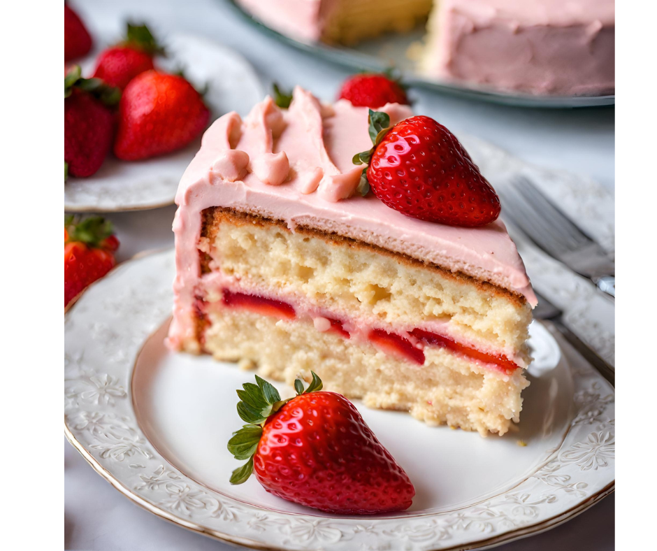

🍓🎂 Quer uma receita incrível para adoçar seu dia?
Experimente nosso delicioso Bolo de Morango! 🍰😋
Com uma massa fofinha e recheio cremoso de morangos frescos, é a combinação perfeita de sabor e
textura
que
vai conquistar todos os corações! ❤️🍓
Confira a receita abaixo:
Ingredientes:
- 3 xícaras de morangos frescos picados
- 2 xícaras de farinha de trigo
- 1 xícara de açúcar
- 1/2 xícara de leite
- 1/2 xícara de óleo vegetal
- 3 ovos
- 1 colher de sopa de fermento em pó
- Pitada de sal
- Morangos inteiros para decorar (opcional)
Modo de preparo:
- Pré-aqueça o forno a 180°C e unte uma forma redonda com manteiga e farinha.
- Em uma tigela grande, misture os ovos e o açúcar até obter uma mistura homogênea.
- Adicione o óleo vegetal e o leite à mistura de ovos e açúcar, e misture bem.
- Peneire a farinha de trigo, o fermento em pó e o sal sobre a mistura líquida e misture até incorporar todos os ingredientes.
- Com cuidado, adicione os morangos picados à massa e misture delicadamente.
- Despeje a massa na forma preparada e leve ao forno pré-aquecido por cerca de 35-40 minutos, ou até que um palito inserido no centro saia limpo.
- Retire do forno e deixe esfriar completamente antes de desenformar.
- Se desejar, decore o bolo com morangos inteiros por cima antes de servir.
Agora é só saborear essa delícia! 🍓🎉 Compartilhe com seus amigos e familiares e aproveite momentos doces juntos! #BoloDeMorango #Receita #Doçura 🍰✨

Usuário: PessoaNormal
... meio fake. parece que essa receita e a foto foi gerado por IA. nao aconselho tentar fazer esse bolo nao
Usuário: FoodieMax
Morango é minha fruta favorita, e esse bolo parece simplesmente divino! 😍
Usuário: SweetToothSara
Estou babando só de olhar para essa imagem! Preciso da receita AGORA! 😋
Usuário: TeaLoverTom
Perfeito para uma tarde de chá com as amigas! 😊
Usuário: CakeConnoisseurClaire
Esse bolo de morango está tão bonito que nem sei se teria coragem de cortar! Mas com certeza eu comeria tudo! 😄🍰
Usuário: CravingChris
Meu desejo por algo doce está gritando depois de ver essa foto! 🍓🍰
Usuário: ArtisanBakerAlice
Esse bolo parece uma obra de arte! Mal posso esperar para provar cada pedacinho!
Usuário: BerryLoverBob
Morango é amor em forma de fruta, e esse bolo é a prova disso! 💕
Usuário: BakingEnthusiastEmma
Uau! Essa foto está me fazendo salivar! Definitivamente preciso fazer esse bolo em casa!
Usuário: DreamingDessertsDave
Simplesmente irresistível! Já estou sonhando com o sabor desse bolo de morango!
Usuário: PessoaNormal
esses comentários tmb são estranhos. o nome das pessoas tem a ver com confeitaria...